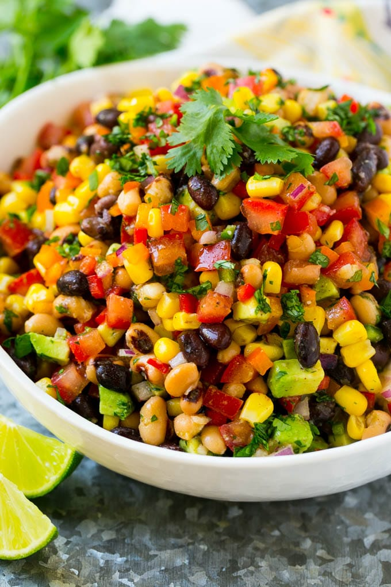

Cowboy Caviar

Some call it 'bean dip' but I think the name Cowboy Caviar is more exciting. This is a pretty healthy dip that you can customize based on your taste. It's a great appetizer but also makes a good side dish with grilled chicken or fish!
Ingredients:
- 1 medium green pepper
- 1 medium red pepper
- 1/2 red onion, minced
- 2 medium size tomatoes
- 1 medium seedless cucumber
- 1 can of corn niblets
- 1 can of your preferred beans (black, kidney, six-bean blend, or chickpeas work best)
- 1 avocado, chopped
- 1/3 cup olive oil
- 1/4 cup lime juice
- 1 tbsp honey
- 1 tsp chili powder
- 1 tsp cumin
How to make them:
- Chop all the veggies and beans combine in one big bowl.
- Toss in olive oil & other sauce ingredients/li>
- Serve with Tostitos
Back to Main Page